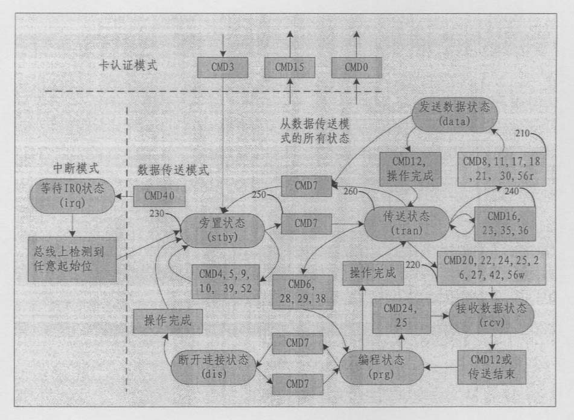

发明名称--存储卡可变长多块数据传输方法
| 申请号 | CN200610087320.0 | 申请日 | 2006.06.07 | ||
| 公开（公告）号 | CN101086724A | 公开（公告）日 | 2007.12.12 | ||
| IPC分类号 | G06F13/38 | 申请（专利权）人 | 普天信息技术研究院; | ||
| 发明人 | 曹会扬; | 优先权号 |
摘要:
本发明公开了一种存储卡可变长多块数据传输方法，该方法包括如下步骤：读卡设备使存储卡进入到旁置状态；当存储卡进入旁置状态后读卡设备通过向存储卡发送命令使存储卡进入传送状态；在传送状态中读卡设备通过命令设置多块数据传输的块数量；该方法还包括如下步骤：在存储卡传输命令列表中添加可变长多块数据读命令和可变长多块数据写命令，当多块数据传输的块数量设置完毕后，通过上述添加的命令完成存储卡可变长多块数据的读写。本发明对数据的传输操作既灵活方便又提高了传输的效率。
摘要附图:
